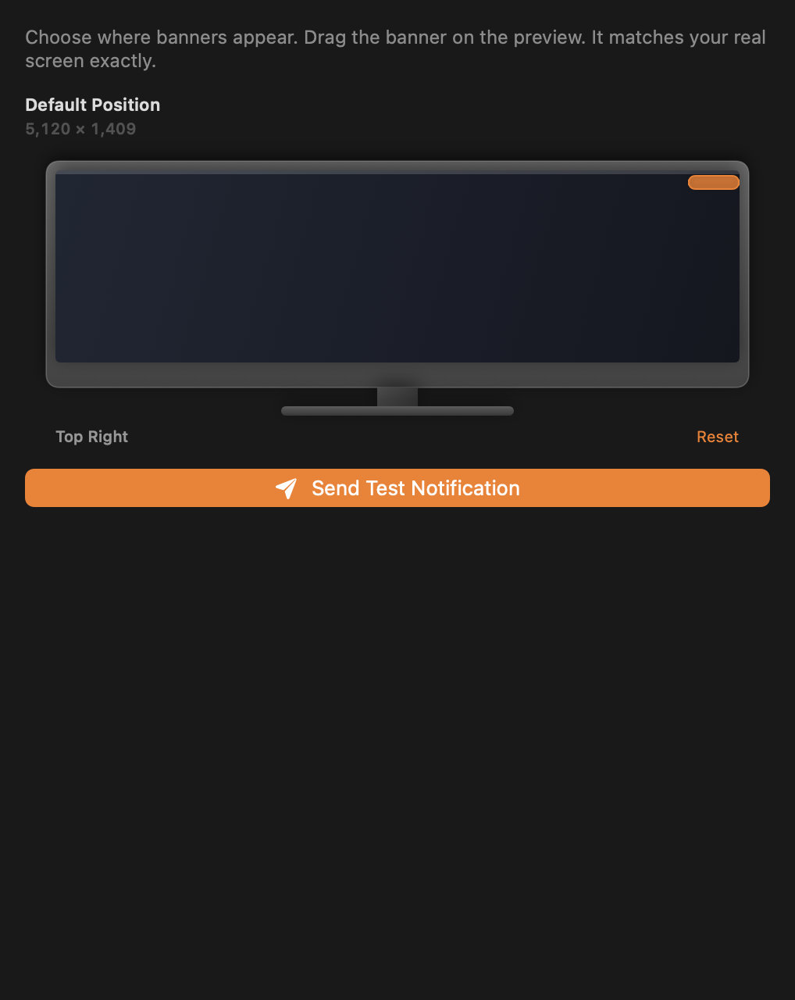
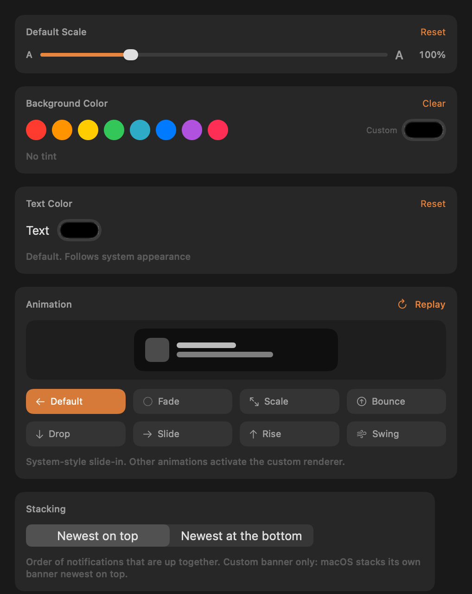
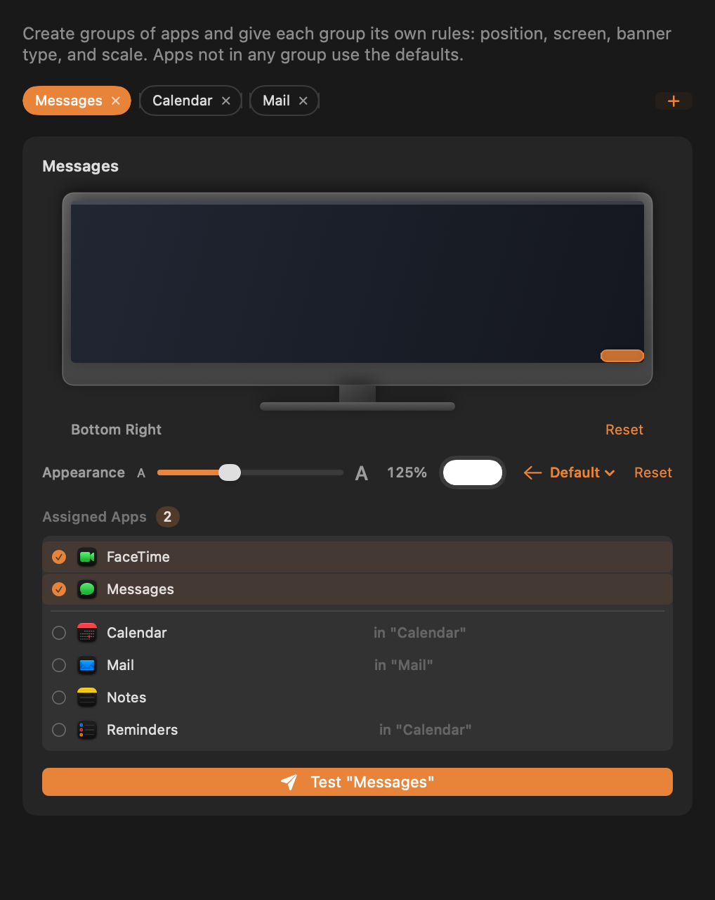
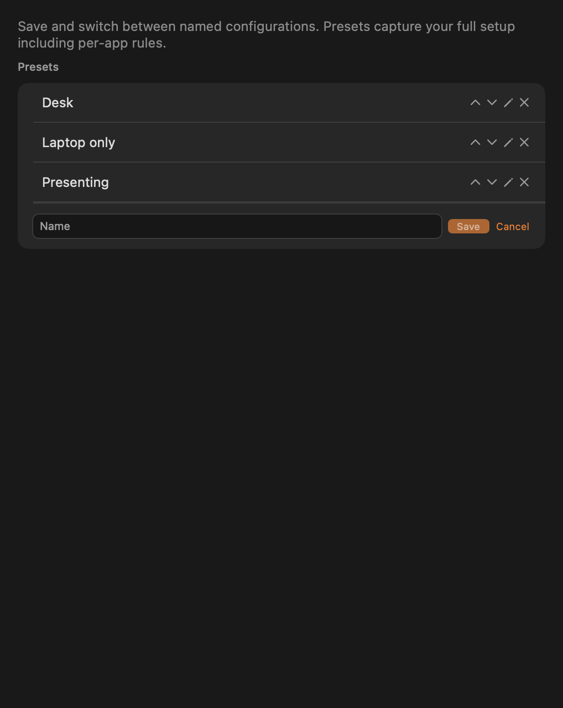
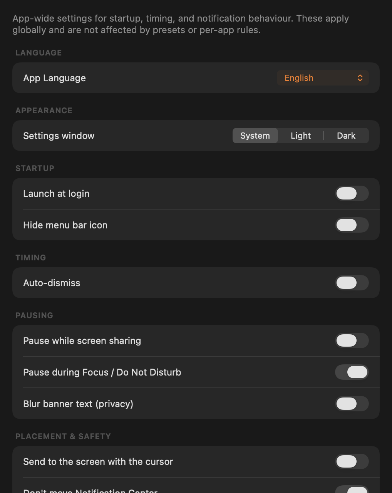
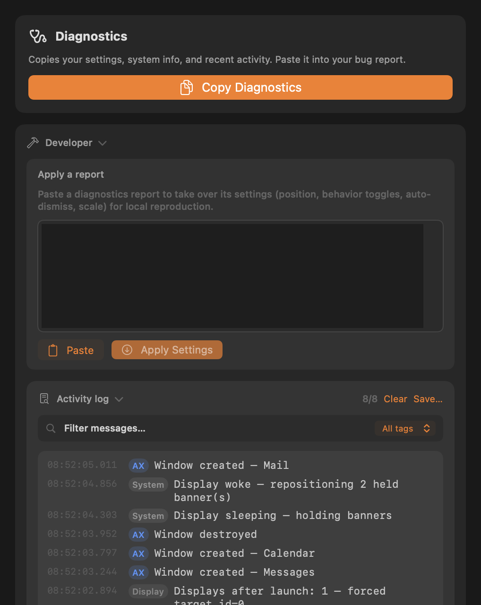
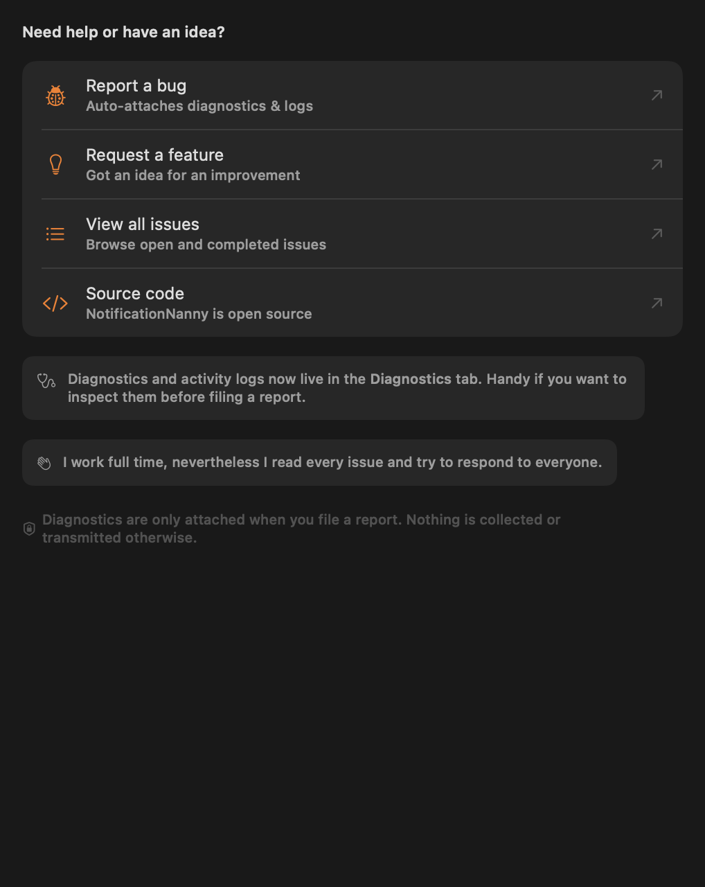

Don't let macOS decide
where your notifications go.
Position, scale, tint, and animate your notification banners globally or per app, on whichever display you want.
brew tap chessper53/notificationnanny https://github.com/chessper53/NotificationNanny
brew install --cask notificationnanny
Every corner of it is configurable
One menu-bar icon, one settings window. Drag a banner to where you want it and it stays there.
Position

Nine anchor points, pixel offsets, and independent placement per physical display. Drag a banner where you want it and it stays there.
Banner

Scale from 50% to 250%, tint the background, set the text colour, and choose from eight animations, including the system default.
Exceptions

Group apps and give each group its own position, display, banner style, scale, and tint. Everything else uses your defaults.
Presets

Save named presets covering position, scale, animation, tint, and per-app groups, and switch between whole setups at once.
General

Auto-dismiss on a timer, hold banners while your display is asleep, pause during Focus or screen sharing, launch at login. Export and restore your whole configuration as JSON.
Diagnostics

Copy your settings, system info, and recent activity into a bug report in one click, and read an activity log of the last 1,000 events when something looks off.
Help

Report a bug or request a feature from inside the app. Diagnostics are only attached when you file a report, and nothing is collected otherwise.
Install
Homebrew is the easiest path, and brew upgrade keeps it current.
brew tap chessper53/notificationnanny https://github.com/chessper53/NotificationNanny
brew install --cask notificationnanny
Prefer not to use Homebrew? Download the latest build directly from the
Releases page
and drag NotificationNanny.app to your Applications folder.